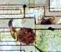
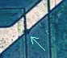

Electrical
Overstress (EOS)
Electrical
Overstress, or EOS, refers to the destruction of the circuit because of
excessive voltage, current, or power.
EOS damage is usually very obvious. Metal

lines are discolored,
burnt, or melted (see photo on the right and article on
metal burn-out). Thin-film resistors are severed, with the severing
usually showing up as straight, whitish lines.
Transistors and diodes exhibit metal migration from one terminal
to another. The
glassivation may even show mechanical damage.
EOS
is usually caused by improper application of excitation to the device,
whether it's still being tested in the manufacturing line or it is
already in the field. Simple
socketting violations such as device misorientation and
shifting can cause EOS damage, especially if the voltages
intended for the power supply pins will be applied to stress-sensitive
or power-limited pins. Improper excitation settings or voltage spikes in
the excitation source are also common causes of EOS damage.
EOS
damage is not always obvious though. Some EOS events leave no apparent
physical manifestation on the die surface at all.
Such EOS events can still render the affected component
non-functional, even if no physical anomalies are observable. Weak EOS
events may also occur, simply shifting the parametric performance of the
affected component, but nonetheless affecting the over-all performance
of the device.
Latch-up
and Electrostatic Discharge (ESD) are special cases of EOS, and are
discussed in more detail as separate failure mechanisms in this
reference.
See also separate article on
EOS/ESD Failures.
Electromigration
Electromigration
refers to the gradual displacement or mass transport of the metal atoms of a conductor as
a result of current flowing through that conductor. It can lead to
formation of voids or hillocks in the metal line, which may cause open
and short circuits, respectively.
See separate article on
electromigration.
Electrostatic
Discharge (ESD)
Electrostatic
Discharge, or ESD, is a single-event, rapid transfer of electrostatic
charge between two objects, usually resulting when two objects at
different

potentials come into direct contact with each other.
ESD can also occur when a high electrostatic field develops
between two objects in close proximity.
An ESD event can damage a device in many ways, e.g., conductor fusing,
metal-resistor severing, junction damage,
dielectric/oxide ruptures, etc.
There
are three (3) ESD models that are widely accepted in the industry today.
These are the Human Body Model (HBM), the Charged Device Model (CDM),
and the Machine Model (MM). The
HBM simulates the electrostatic discharge of a person touching an IC at
a different potential. The CDM simulates the discharge of a device
charged to either a positive or negative potential when it touches a
conductive surface that is at another potential.
The MM simulates the discharge of a machine or a tool when it
comes into contact with a device at a different potential.
See also separate articles on
ESD and
EOS/ESD Failures.
Gate
Oxide Breakdown
In
a MOS transistor, the electrical characteristics of the channel through
which the carriers flow are controlled by a gate. This gate is
isolated from the channel by a thin layer of oxide. Gate oxide
breakdown is therefore simply the destruction of this dielectric
layer. Gate oxide breakdown is also sometimes referred to as gate
oxide rupture, and often manifests as a short or leakage path from the
gate to the channel or substrate.
Gate
oxide breakdowns are usually caused by electrical overstress (EOS) or
electrostatic discharge (ESD), although imperfections or defects
in the gate oxide layer can also lead to its early life or
time-dependent breakdown. These defects may be in the form
of mobile ions, stray particles, or insufficient coverage.
See
also Oxide Breakdown and
Dielectric Breakdown.
<Back to Page 1>
<Proceed to Page 3>
See Also:
Package Failures; Failure
Analysis; Basic FA
Flows;
Reliability Models